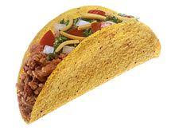
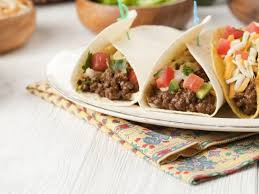
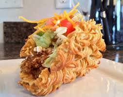
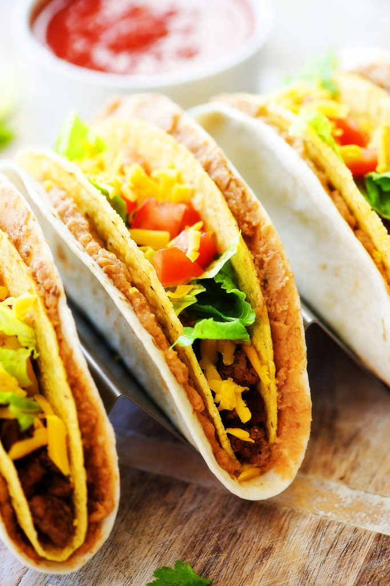

As you know, I am a very successful food blogger.
I won the award for the Best Food Blogger of 2020 for my excellent food reviews on yelp.
My yelp reviews have been featured on national television and Gordon Ramsay says they are really good.
I also invented the taco
As you all know I invented the taco.
What you might not know though is that I also patented tacos.
So basically, I can sue taco bell.
I will sue taco bell, im going to destroy the taco bell.
|  |  |
|  |  |
My favorite foods are different types of tacos.
Number 1: Hard Shell Taco, it's hard. You put meat, cheese, and lettuce in it and it's yummy. Also I invented it.
Number 2: Soft Shell Taco, it's soft while maintaining the taste of a hardshell taco, the only difference is texture.
Number 3:Ramen Taco, The shell is ramen. Thats wild yo. It has the taste of ramen and a taco and those two compliment each other
Number 4: Taco Taco, its taco inside of another taco. It is another one of my inventions. I thought of it when i was like "hmm you know whats better than a taco? two tacos" and then i put a taco inside of another taco